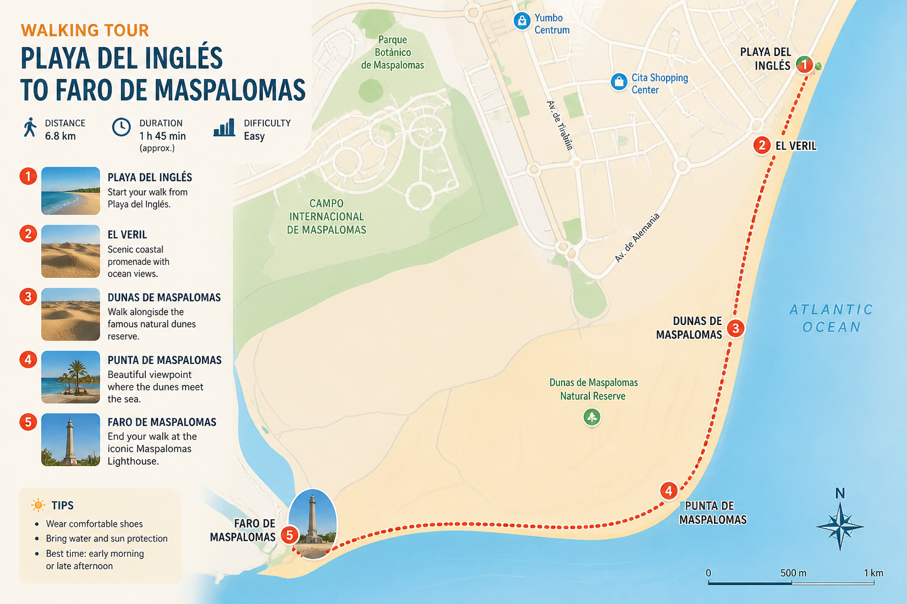
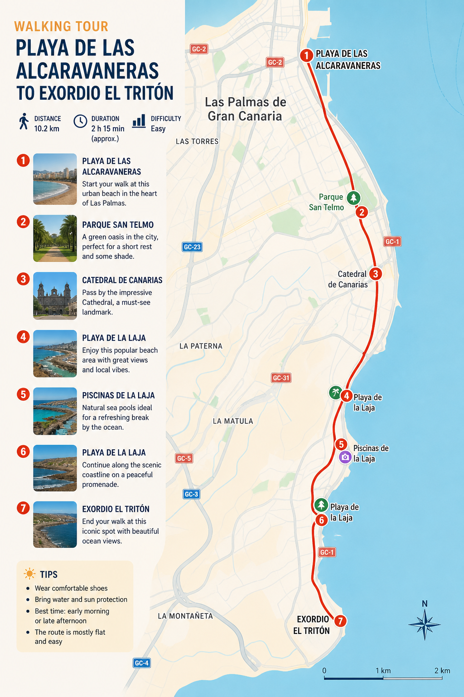
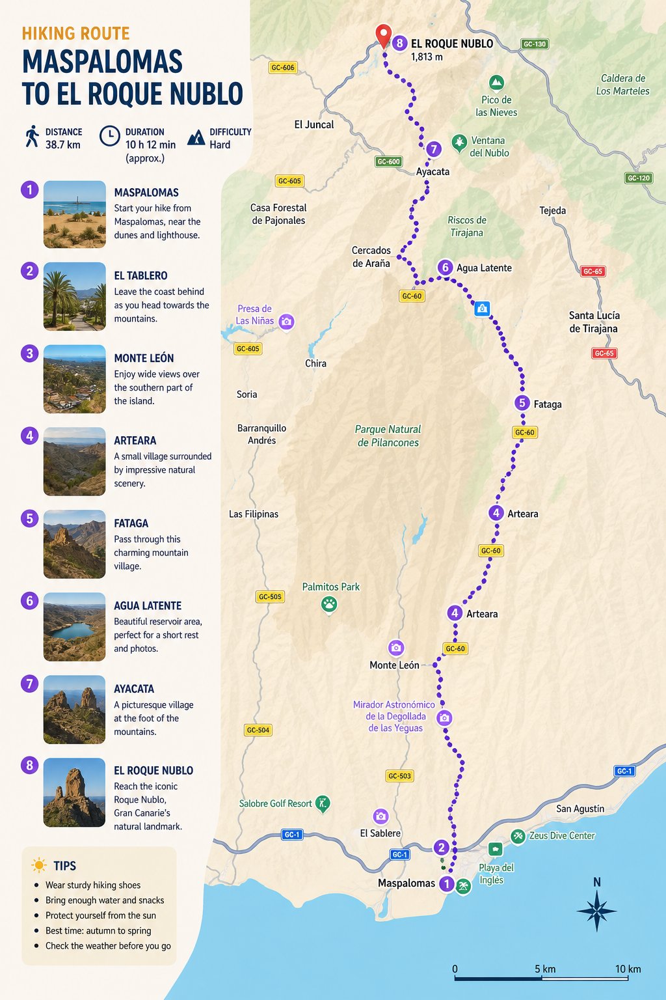
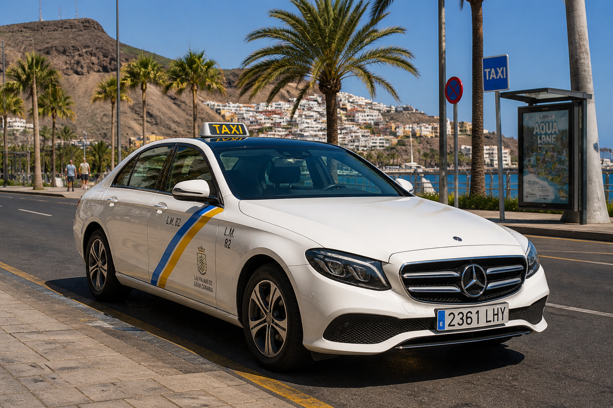
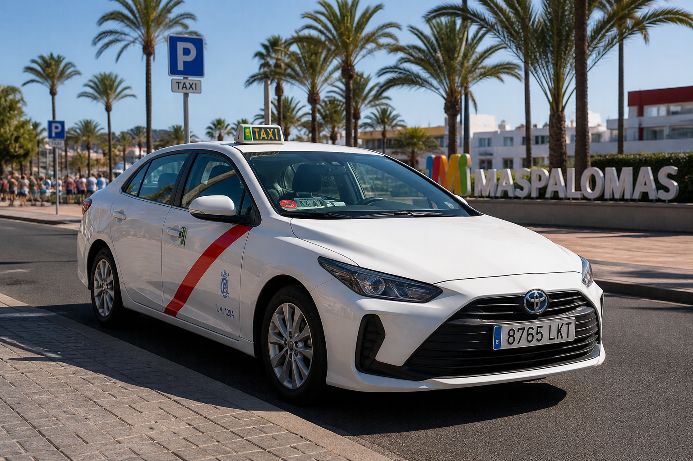
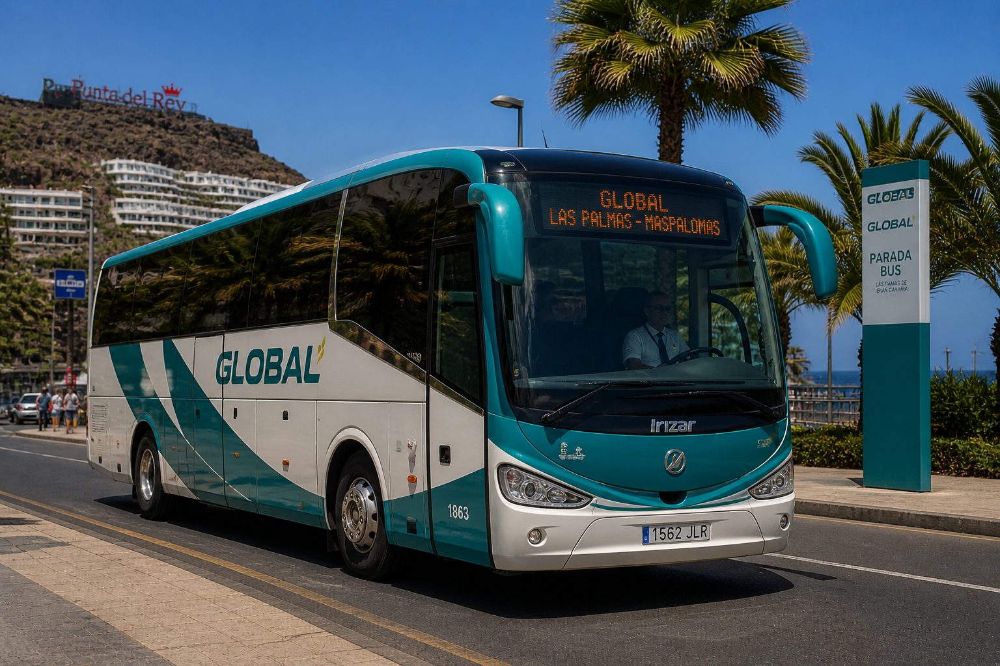
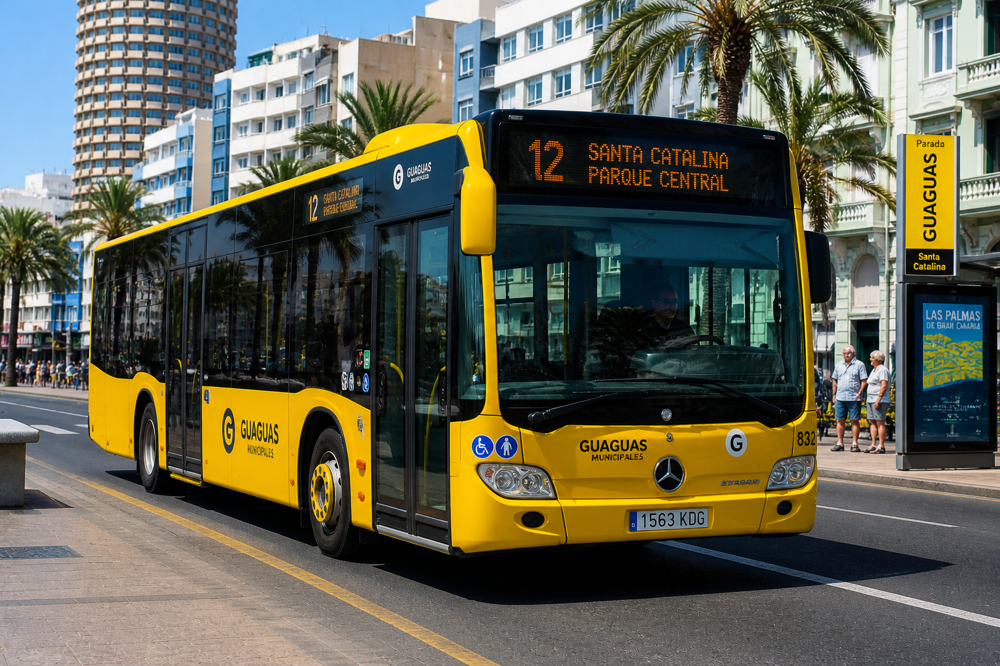

Travel Guide
Plan your journey around Gran Canaria with ease. This guide covers everything you need to know about transport options, getting around the island, and using maps to navigate like a pro.
Maps
Walking Routes
Playa del Ingles - Faro de Maspalomas

Distance: 6–7 km.
Duration: around 1.5 to 2 hours.
Difficulty: easy, mostly flat terrain
Las Palmas
(Alcaravaneras Beach to Exordio el Triton)

Distance: 20 km.
Duration: around 4.5 to 5 hours.
Difficulty: easy, long distance.
Maspalomas to Roque Nublo

Distance: 38.7 km.
Duration: around 10 hours.
Difficulty: hard – long route with steep climbs and mountain terrain.
Currency
Currency Info
The official currency in Gran Canaria is the Euro (€). Most shops, restaurants, hotels, and tourist attractions accept card payments, but it is still useful to carry some cash for buses, small cafés, markets, parking, or local taxis.
ATMs are widely available across the island, especially in Las Palmas, Maspalomas, Playa del Inglés, and other tourist areas. When paying by card, it is usually better to pay in euros instead of your home currency to avoid extra conversion fees.
Tip: Keep some coins and small notes with you for public transport, beach facilities, and smaller local businesses.
Transports
Taxis
There are different taxi companies you can use for short distances within the island.
All taxis have meters and regulated fares.

Las Palmas

Maspalomas, Puerto Rico, Mogan
Approximate fares from the airport:
| Destination | Price (€) |
|---|---|
| Las Palmas | €27 – €30 |
| Maspalomas | €40 – €50 |
| Puerto Rico | €55 – €65 |
| Puerto de Mogán | €60 – €70 |
Buses
Using the bus in Gran Canaria is a great option if you don’t want to spend too much on a taxi from the airport.
The island has a reliable and affordable public transport system with two main companies.
Global operates interurban routes, connecting the airport with towns and tourist areas across the island,
making it ideal for longer distances.
Guaguas Municipales runs the urban network in Las Palmas —
these are the distinctive yellow buses that cover the city efficiently.

Global Bus

Guaguas Municipales
Bus Fares in Gran Canaria:
| Type | Route | Duration | Price (€) |
|---|---|---|---|
| Global | Las Palmas → Maspalomas | ~45–60 min | €4 – €8 |
| Global | Las Palmas → Puerto Rico | ~1h 10 min | €6 – €10 |
| Global | Las Palmas → Puerto de Mogán | ~1h 30 min | €7 – €14 |
| Global | Las Palmas → Telde | ~20–30 min | €1.5 – €3 |
| Global | Las Palmas → Vecindario | ~35–45 min | €3 – €6 |
| Guaguas | Las Arenas → Mesa y López | ~10 min | €1.40 |
| Guaguas | Mesa y López → La Catedral | ~15–20 min | €1.40 |
| Guaguas | Las Arenas → Poema del Mar | ~15 min | €1.40 |
| Guaguas | Santa Catalina → Vegueta | ~20 min | €1.40 |
| Guaguas | Las Canteras → Las Arenas | ~10 min | €1.40 |